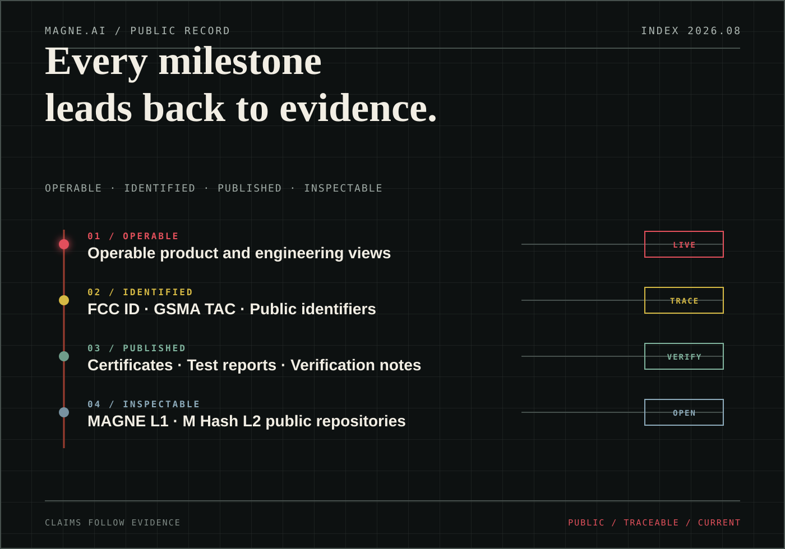

Evidence of technical development and pre-engineering is available; documents are subject to NDA and are accessible only under permission controls.
Project Progress · PUBLIC RECORD
Progress is nota progress bar.It is a record of evidence.
We only list as progress what is public, verifiable or actionable. Unconfirmed mass production, shipment and regional information should not be replaced by "soon".

Public evidence · PUBLISHED EVIDENCE
Not a badge.
It is an inspection path that can be completed.
Each status is linked back to a certificate, public number, test report or documentation. Readers do not have to trust MAGNE.AI before they can start checking.
ANDROIDGoogle GMS and Widevine L1View references →
UNITED STATESFCC ID 2BVCPGC603606View public documents →
GLOBAL MOBILEGSMA TAC 01681300View device identity →
BATTERY SAFETYCB certificate and IEC 62133 testingView certificate →
TRANSPORTUN38.3 and transport informationView shipping documents →
CALIFORNIAProposition 65 ReportView disclosure documents →
EUROPECE EU-Type ExaminationView type certificate →
State boundaries:"Public" listed on this page means that there is already a website page or underlying document available for review; the expansion of component certification does not mean that the entire machine has achieved the same safety level, nor does it replace the official record of the regulatory agency or the original certificate.
Actual inspection possible · INSPECTABLE OUTPUT
Products don’t just exist in words.
01 / PRODUCTMAG1 product page
Black and white 3D, three screen status, hardware specs, package contents and Google services.
View products → 02 / ENGINEERINGInteractive project viewsSeven-segment teardown, 52 visible components, rotating touch controls and component positioning.
Open viewer → 03 / TRUSTComplete security architectureComplete architecture diagram and simplified mobile diagram of UTEE, HyperSeed N60, and HyperSeed 72B.
Read the safety page →Time axis · PUBLIC CHRONOLOGY
Time does not bear witness for promises.
Things that get done will happen.
PRIMARY CHRONOLOGY
Dates and event names are organized according to public event records; certification is based on the MAG1 site inspection page, and activities and network events are linked back to the original source.
ROOTDATA · MAGNEAI Milestones ↗Show all 37 nodes
- WEB3W3.MAGNE.AI launches its Ecosystem Evidence RegistryThe registry organizes verifiable public ecosystem evidence by source, date and bilateral signal.
- WEB3W3.MAGNE.AI launches the Season 2 on-chain activity dashboardThe dashboard publishes Season 2 participation and settlement status.
- PRODUCTMAGNE AI BOX publishes its conditional POC roadmap and specification statusThe conditional POC roadmap publishes development stages, specification status and evidence boundaries.
- PRODUCTMAGNE.AI publishes the complete MAG1 specifications and evidence chainMAG1 technical specifications, device validation and public evidence are published in one reference path.
- PRODUCTMAGNE.AI launches the MAG1 interactive engineering structure viewerThe viewer opens exterior, component and exploded-structure paths for inspection.
- WEB3W3.MAGNE.AI Agent infrastructure enters public previewThe public preview opens an entry point for Web3 Agent infrastructure and its published capabilities.
- COMPANYMAGNE.AI launches its new product websiteThe site consolidates MAG1, AI, security, network, compliance and ecosystem information.
- COMPANYAdditional US$2.64M strategic financingCumulative public financing has reached US$12.64M, and the funds will support engineering verification, commercial delivery and AI Agent payment infrastructure.
- COMPANYGAEA Ventures · WebX Tokyo 2026 Side Event SeriesMAGNE.AI participated in the GAEA Ventures series during WebX Tokyo.
- WEB3MAGNE.AI Season 2 incentive campaign goes liveThe Season 2 community incentive campaign opens with its on-chain activity entry point on W3.MAGNE.AI.
- WEB3Phone Gen1 Lottery Season 1 ended successfullyThe first quarter of the community incentive activity completed the public cycle, with a total of 76,650 independent on-chain addresses participating, and real USDT on-chain interactions were recorded, verifying the participation and on-chain activity of the MAGNE.AI community.
- DEVICEPVT P2 stage acceptance passedResults of the phase are publicly available; supporting documentation is subject to the NDA and available for review during controlled due diligence.
- COMPLIANCEMAG1 CE certification publicEU-Type Examination certificate identification information and applicable scope enter the public inspection path.
- COMPLIANCEMAG1 FCC certification publicIndex wireless, EMC, SAR and HAC public information with FCC ID 2BVCPGC603606.
- WEB3Session 1 campaign dashboard goes liveThe campaign dashboard opens with public participation progress and status.
- WEB3MAGNE.AI launches the Phone Gen1 Lottery Season 1 community incentive campaignThe first season of the community incentive campaign officially opens.
- COMPLIANCEMAG1 California Proposition 65 PassedProduct chemical substance test reports enter public disclosure.
- NETWORKBeosin Pre-deployment Audit PublicThe smart contract security audit is completed before deployment, and the public report can be directly viewed.
- NETWORKBeosin Business-contract Audit PublicBusiness Contract smart contract security audit has been completed, and the public report can be directly viewed.
- WEB3Issued by GS Legal · $MHA Legal OpinionThe Singapore legal opinion has been issued; the original is subject to the NDA, and only those who are qualified for review can apply for controlled download.
- DEVICEEVT trial production completed·P1 phase acceptance passedResults of the phase are publicly available; supporting documentation is subject to the NDA and available for review during controlled due diligence.
- COMPANYUniversity Engagement Tour · PhiladelphiaMAGNE.AI participated in the Real-World Assets Philadelphia station exchange event.
- DEVICEEVT trial production execution startedStage nodes are public; supporting records are subject to an NDA and do not disclose transaction information or commercial terms.
- DEVICEPRE EVT P0 stage acceptance passedResults of the phase are publicly available; supporting documentation is subject to the NDA and available for review during controlled due diligence.
- COMPLIANCEMAG1 CB certifiedIEC 62133-2 battery safety certificate and test report are available for inspection.
- COMPLIANCEMAG1 GSMA TAC issuedTAC 01681300 becomes the Global Mobile Device Identity Index.
- COMPLIANCEMAG1 UN38.3 certifiedLithium battery transportation testing, MSDS and shipping data form a complete review path.
- COMPLIANCEMAG1 Google GMS completed certificationAndroid, Google Mobile Services and Widevine L1 related materials are under review.
- NETWORKMAGNE L1 testnet browser launchedL1 moves from code into a connectable, observable public test environment.
- NETWORKM Hash L2 testnet browser launchedThe L2 test activity based on OP Stack has a public query entrance.
- DEVICEPRE EVT technology development phase launchedStage nodes are publicly available; supporting documents are subject to an NDA and can be reviewed during controlled due diligence.
- DEVICETrial production and manufacturing cooperation startedStage nodes are publicly available; supporting documents are subject to an NDA and can be reviewed during controlled due diligence.
- DEVICEManufacturing supply chain access process startsStage nodes are publicly available; supporting documents are subject to an NDA and can be reviewed during controlled due diligence.
- WEB3MAGNE L1 and M Hash L2 code open sourceThe two-tier network’s public repositories are beginning to receive outside scrutiny.
- COMPANYUS$10M strategic financingThe first round of strategic capital provides the next period of verification time for hardware, network and market delivery.
- COMPANYNew York · Intelligent Assets: AI Meets the RWAMAGNE.AI hosts a side event on AI and real assets in New York.
- COMPANYMAGNE.AI Launch Night · MYBW 2025For the first time, the product fully presents the hardware, AI and ownership proposition in public.
The chronological order is based on the RootData MAGNEAI project page and the company's public records; the certification status, scope of application and technical conditions are still based on the original certificate, test report and regulatory records.
Controlled Evidence · NDA EVIDENCE
Some evidence exists.
But it is not suitable for public downloading.
Trial production manufacturing and verification evidence is available and is not available for public download; you can apply for controlled due diligence.
Stage and acceptance results are publicly available; supporting documentation is subject to an NDA and does not disclose the content, subject matter, or terms of the document.
Confidential information does not enter website assets, built products or public repositories; it is only marked NDA and available for inspection.